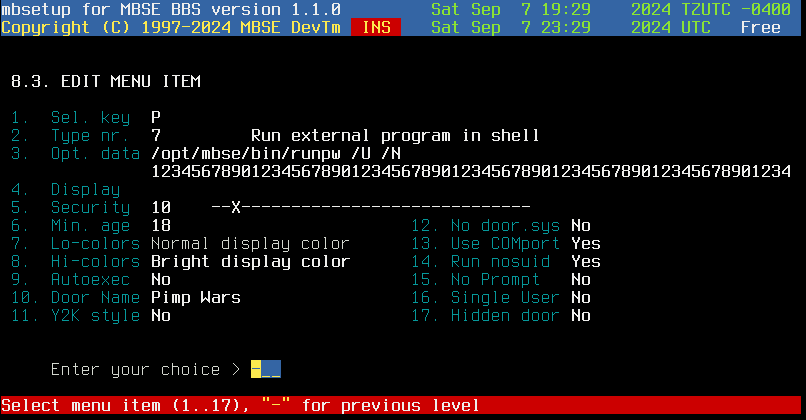

Last update 7 Sept 2024
MBSE BBS: Running Linux doors with MBSE
Introduction
VERY IMPORTANT!
You must perform these steps as user mbse.
Running Linux-native doors is very easy with MBSE. For this example, I'll
use the Linux-native version of "Pimp Wars" by James Coyle (g00r00).
Here's how to do this:
- Install the door to a directory. For this example, I will use
/opt/mbse/doors/pw. Make sure to run umask 007 first!
- Create a bash script similar to below in ~/bin (I call this "runpw"):
#!/bin/bash
cd /opt/mbse/doors/pw
./pimpwars /$1/door32.sys $2
I'll explain that last line below. Make sure to set your binary and the calling script to 0770 and the
other files to 0660.
- Set up a menu entry in mbsetup similar to below:

Make sure the /U and /N options are in that exact order for this door.
The script will expand the calling line in runpw to ./pimpwars /opt/mbse/home/(username)/door32.sys
1 which is what the door expects.
Test out the door and it should work fine.
 Go Back
Go Back